Префектура Тиба · Итихара · искусство
Художественный музей у озера Итихара: современное искусство на берегу озера Такатаки
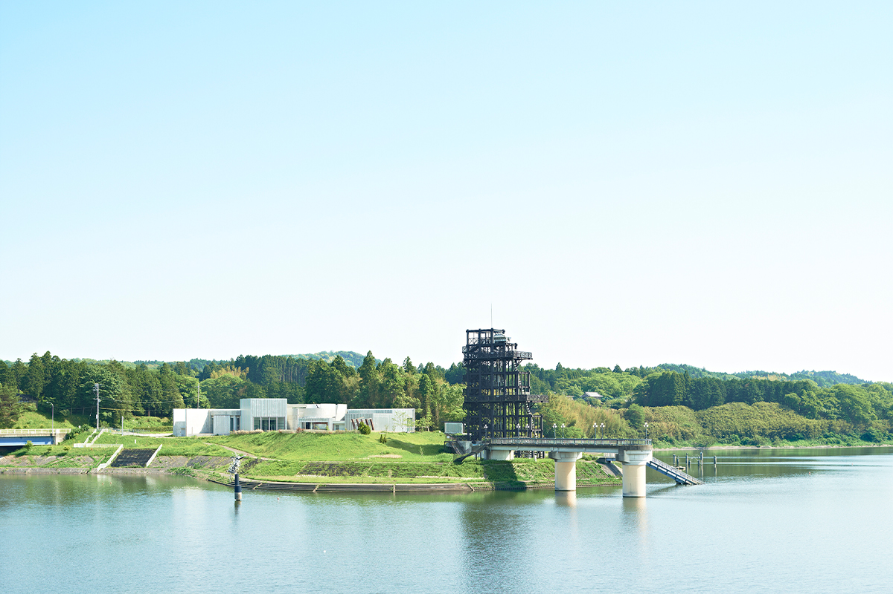
В холмах полуострова Босо, примерно в часе езды на машине от столичного региона, на берегу самого большого по площади водохранилища префектуры Тиба стоит небольшой музей. Сюда едут ради современного искусства, но не меньше ради самого здания и вида на озеро.
Озеро
Такатаки: водохранилище среди холмов
Озеро Такатаки появилось в 1990 году, когда построили плотину Такатаки. Это рукотворное водохранилище с самой большой площадью воды в префектуре Тиба. По берегам устроены площадки со смотровыми террасами, а между ними стоят музей, святилище Такатаки и мемориальный зал плотины. Для жителей Итихары озеро стало местом отдыха, где история края соседствует с культурой.
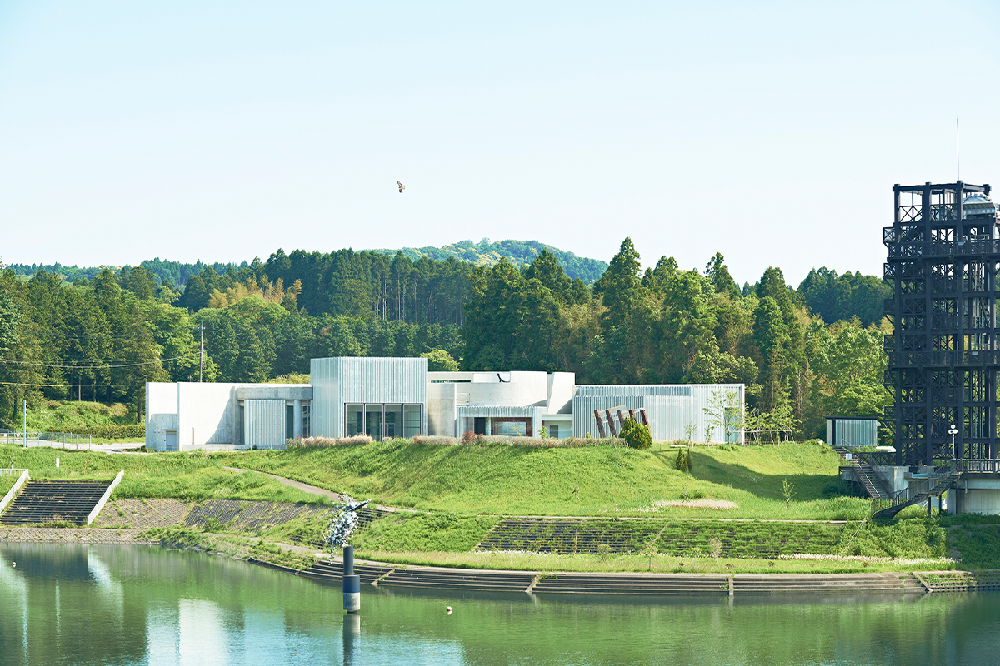
Огромная тёмная конструкция рядом с музеем сделана по образцу водоподъёмника системы Фудзивара, какие работали здесь в эпоху Мэйдзи (1868–1912). Река Ёро глубоко прорезала здешние холмы, и поля на возвышенностях оказывались намного выше воды. Чтобы поднять воду для орошения, в долине и строили такие машины.
Здание
Бетонный каркас и стальные стены
Музей открылся в 2013 году, к 50-летию города Итихара. До этого на его месте с 1995 года работал туристический и культурный центр «Холм воды и скульптуры», и при обновлении его превратили в музей. Девиз музея звучит так: «Твёрдо стоять ногами на земле сатояма и смотреть широко на весь мир». Сатояма называют обжитый человеком пейзаж из холмов, перелесков и полей.
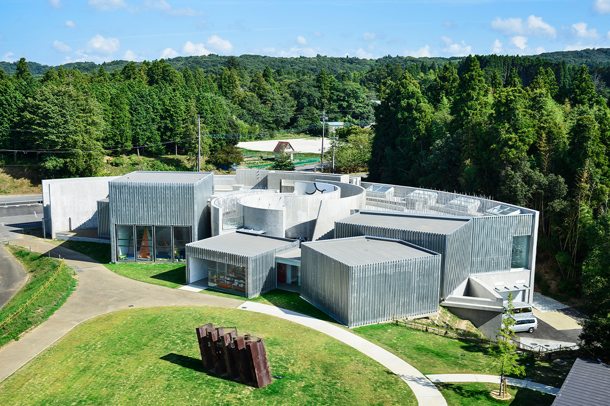
В 2022 году директором музея был арт-директор Фрам Китагава. Он делал выставку архитектора Антони Гауди (1852–1926), после которой японцы увлеклись архитектором, и проект «Фарэ Татикава», превративший бывшую американскую военную базу в городской квартал с искусством. Он же был генеральным директором фестиваля сатояма «Итихара Арт × Микс» на полуострове Босо, триеннале Этиго-Цумари и фестиваля искусств Сэтоути.
Старое здание при перестройке раздели до бетонного каркаса, сняв всю отделку. В каркас, словно стежками, вставили новые стены из гофрированной стали, которые архитекторы назвали «арт-стенами». Ими разделены залы, лаунж и холл. Пандусы и лестницы прежнего здания сохранили: по ним можно ходить кругами, то внутри, то снаружи, и маршрут ни разу не обрывается. Проект обновления сделало бюро двух архитекторов, которые строят жильё, больницы и общественные здания, в том числе корпус Художественно-промышленного университета Канадзавы.
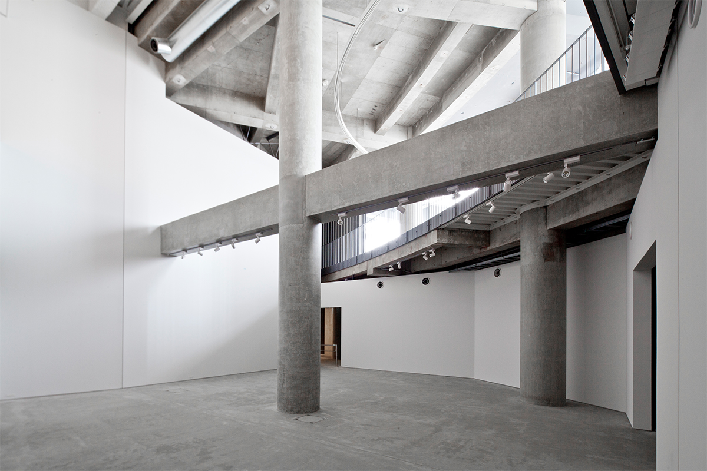
Коллекция
Гравюры Юкио Фукадзавы
Основа коллекции это работы художников, связанных с Итихарой, и прежде всего гравюры Юкио Фукадзавы. Из собрания примерно четыре раза в год составляют новую постоянную экспозицию, а временные выставки посвящены в основном современному искусству.
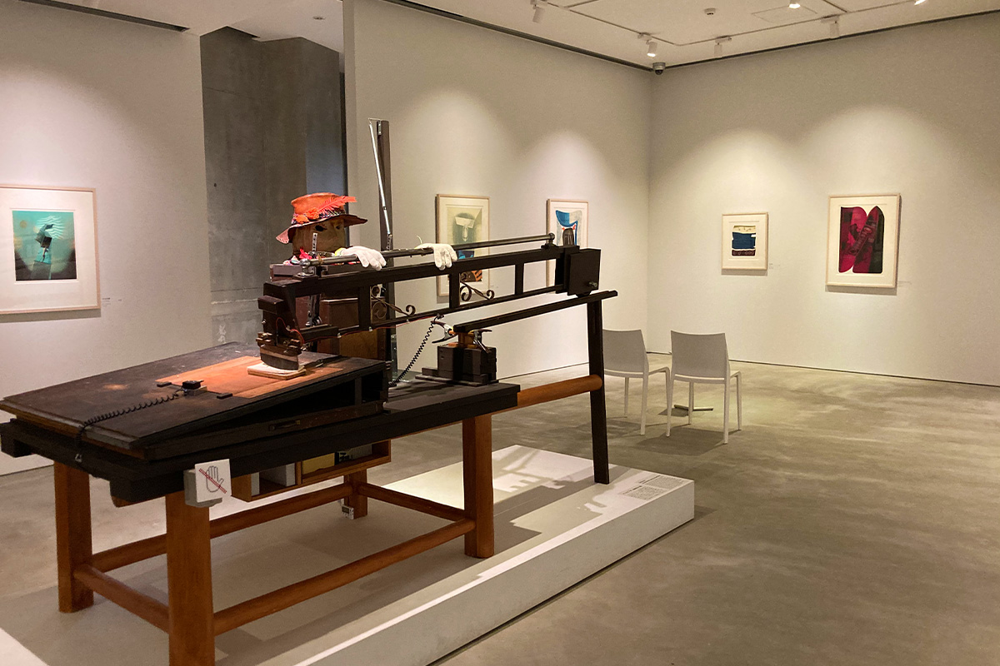
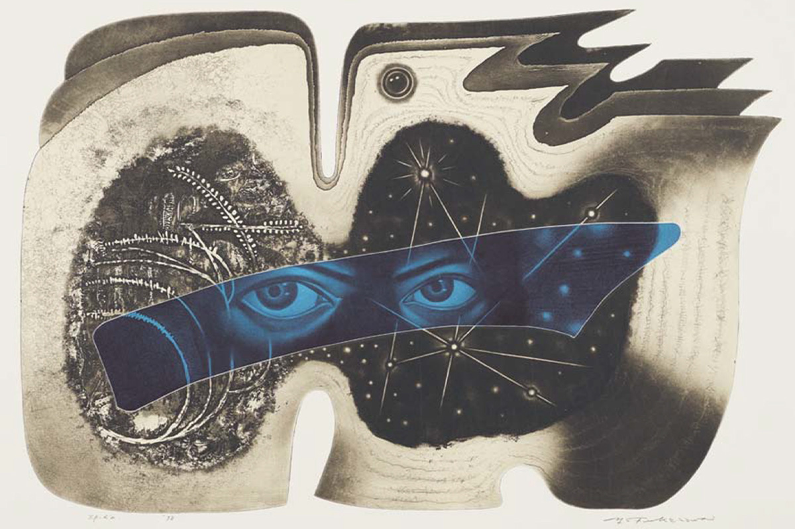
На лужайке
Пикники и мастер-классы
Из столичного региона сюда около часа на машине, и музей пользуется своим местом на берегу озера: кроме выставок здесь много занятий в залах и на воздухе. В «Дни пикника» на лужайке перед музеем расставляют палатки и зонтики, а художников приглашают вести мастер-классы. Город Итихара строит свою жизнь вокруг искусства, и музей, открытый для соседей и детей, стал главной точкой этой идеи.
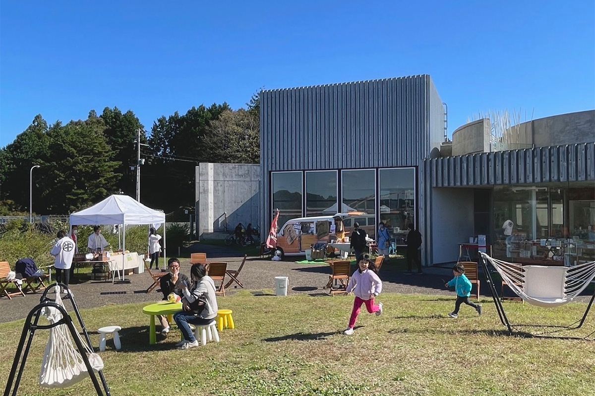
Вокруг музея
Пиццерия и магазин
Рядом с музеем работает PIZZERIA BOSSO. За едой видно озеро, а в меню в основном пицца из сезонных продуктов Босо.
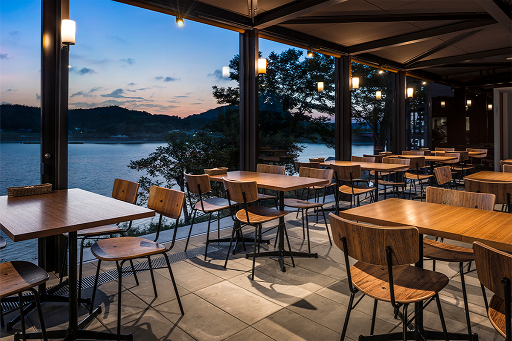
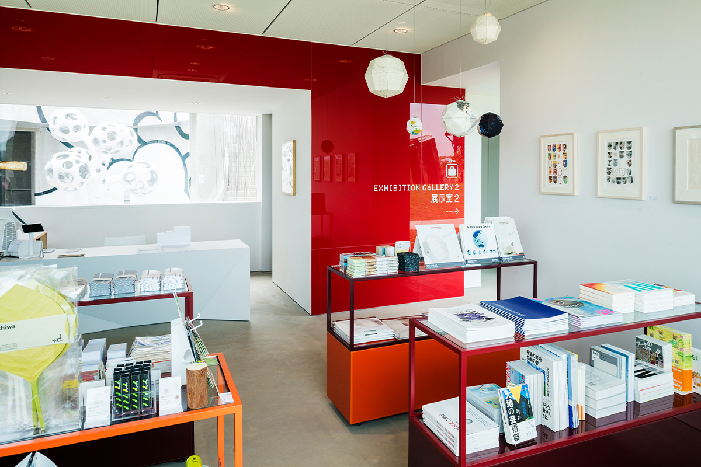
Работы
Искусство снаружи
Несколько работ живут прямо на территории и на стенах здания. Группа KOSUGE1-16 сделала «Heigh-Ho», работу о том, как музей дышит. Перед деревом, похожим на перевёрнутую лёгочную альвеолу, посетители и работы обмениваются «смутным» углекислым газом и «ясным» кислородом. Вечером дерево подсвечивают.
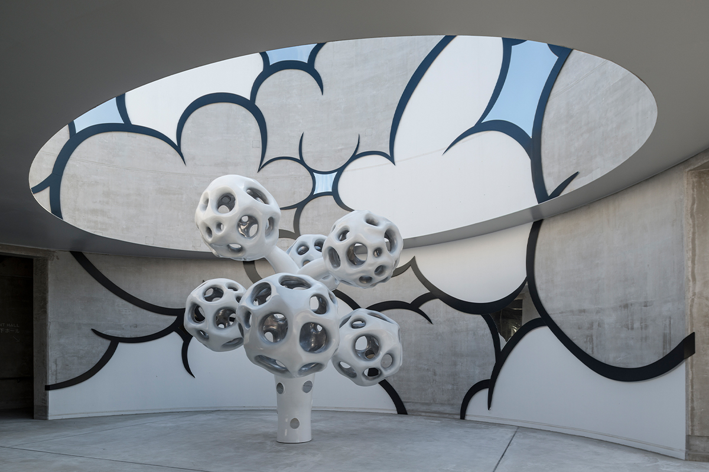
На наружной стене висит символ музея, и в нём просверлены тысячи отверстий. Сквозь них проступают стихи о Босо: это работа «Watermark» графического дизайнера и галереи Art Front Gallery.
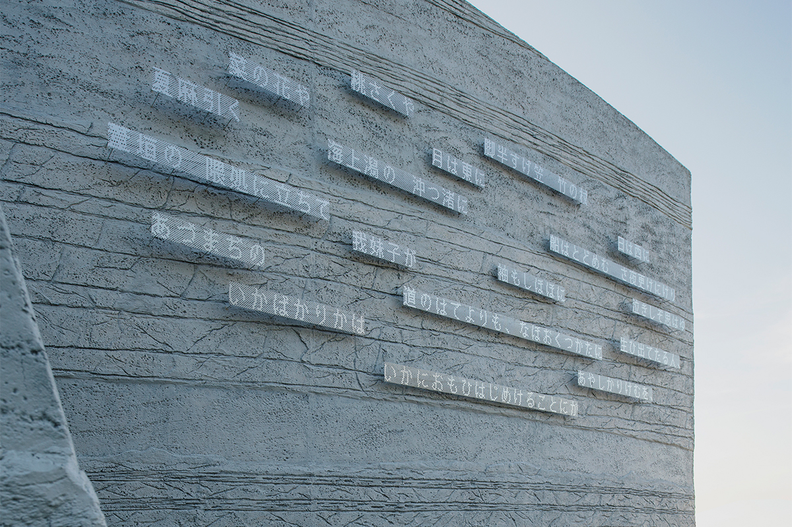
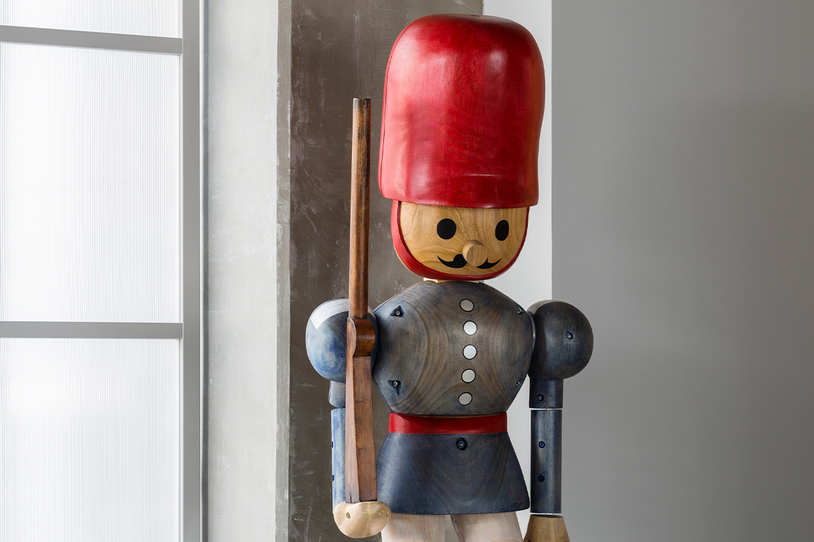
Музей небольшой и стоит среди холмов сатояма, но цели у него большие и обращены ко всему миру. Его называют оазисом столичного региона: это место для взрослых и детей, куда приятно приехать как на прогулку за город. От станции Гои на линии Утибо можно доехать по железной дороге Коминато до станции Такатаки, а оттуда около 20 минут пешком. После тайфуна в сентябре 2026 года поезда на этом участке не ходили, а часть дорог была перекрыта, поэтому перед поездкой стоит проверить транспорт (по сайтам музея и железной дороги на октябрь 2026 года).
Художественный музей у озера Итихара (Ichihara Lakeside Museum)
- Адрес
- префектура Тиба, Итихара, Фунью, 75-1
- Телефон
- +81 436-98-1525
- Часы работы
- будни 10:00–17:00, суббота и дни перед праздниками 9:30–19:00, воскресенье и праздники 9:30–18:00 (вход за 30 минут до закрытия)
- Выходные
- понедельник (если праздник, то следующий будний день), новогодние дни
- Цены / Вход
- зависит от выставки
- Как добраться
- от станции Гои (JR, линия Утибо) по железной дороге Коминато до станции Такатаки, затем около 20 минут пешком
- Сайт
- lsm-ichihara.jp
Фото: Тадаси Эндо.